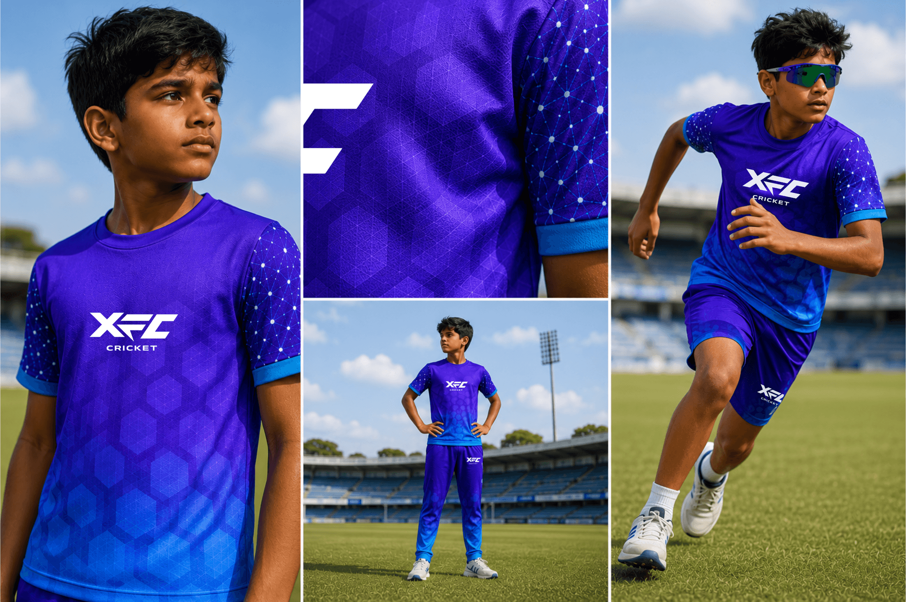
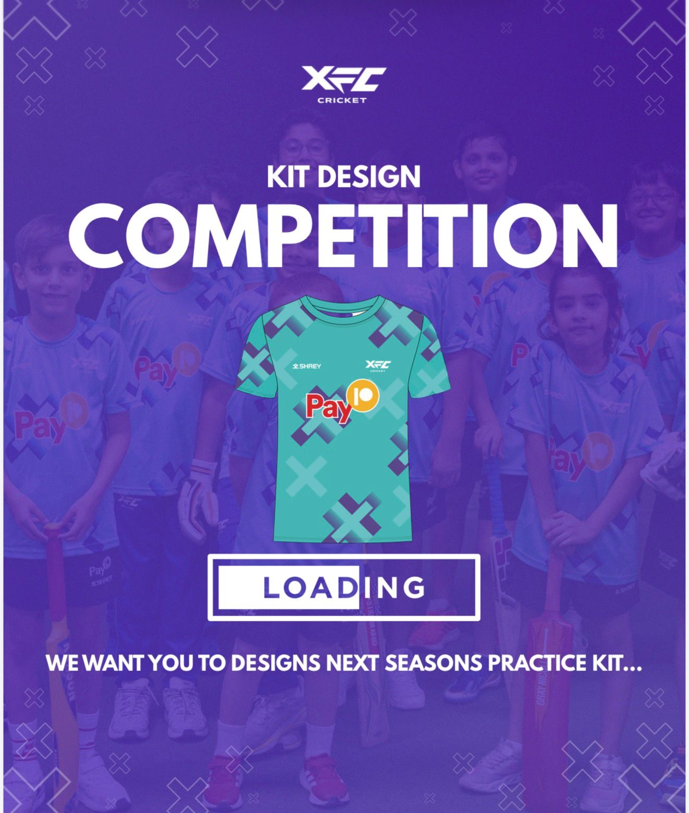
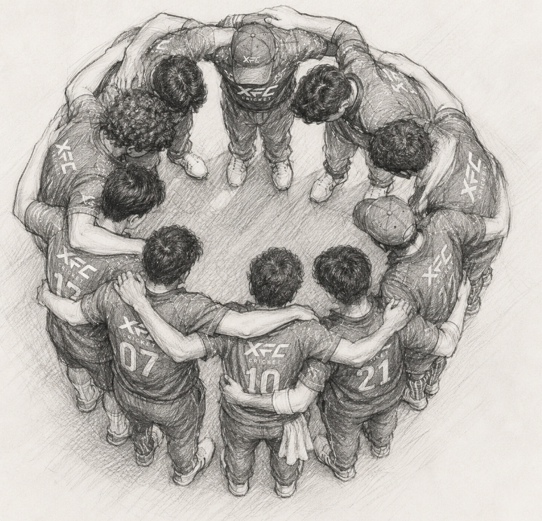
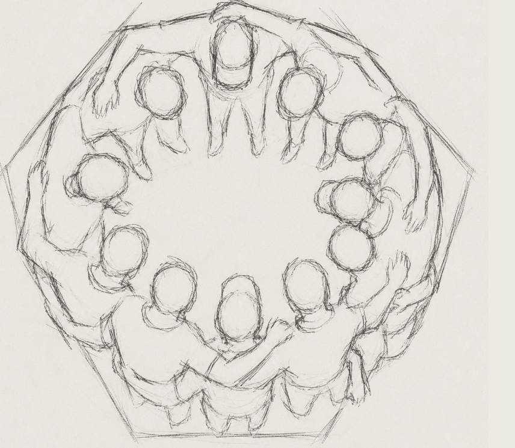
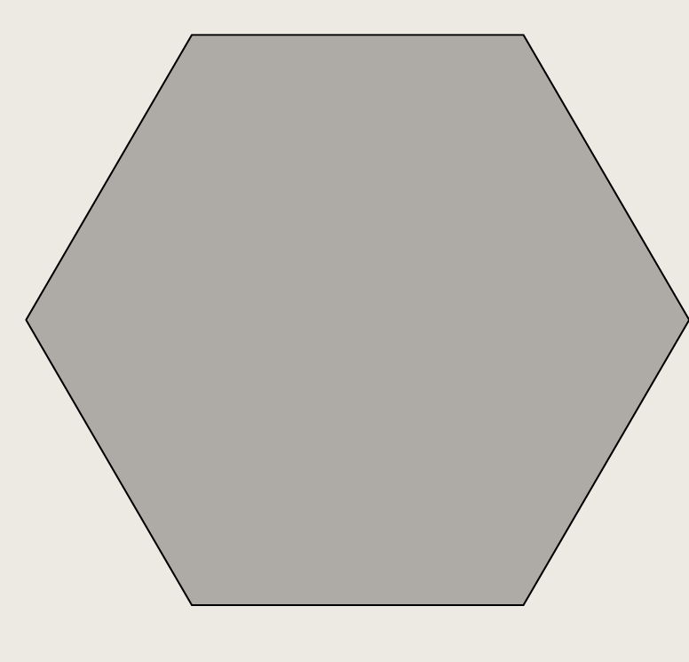
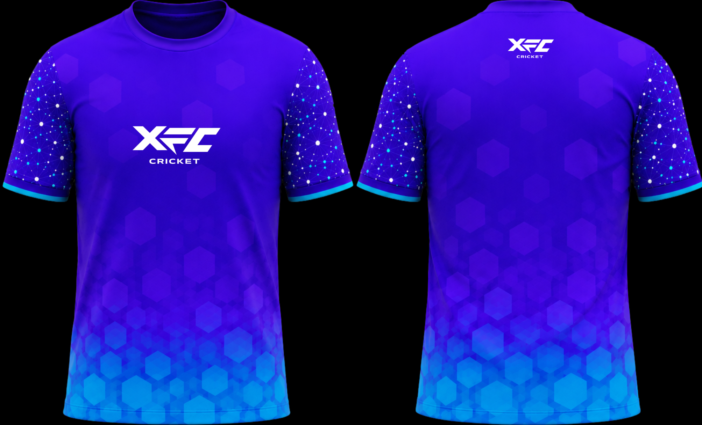
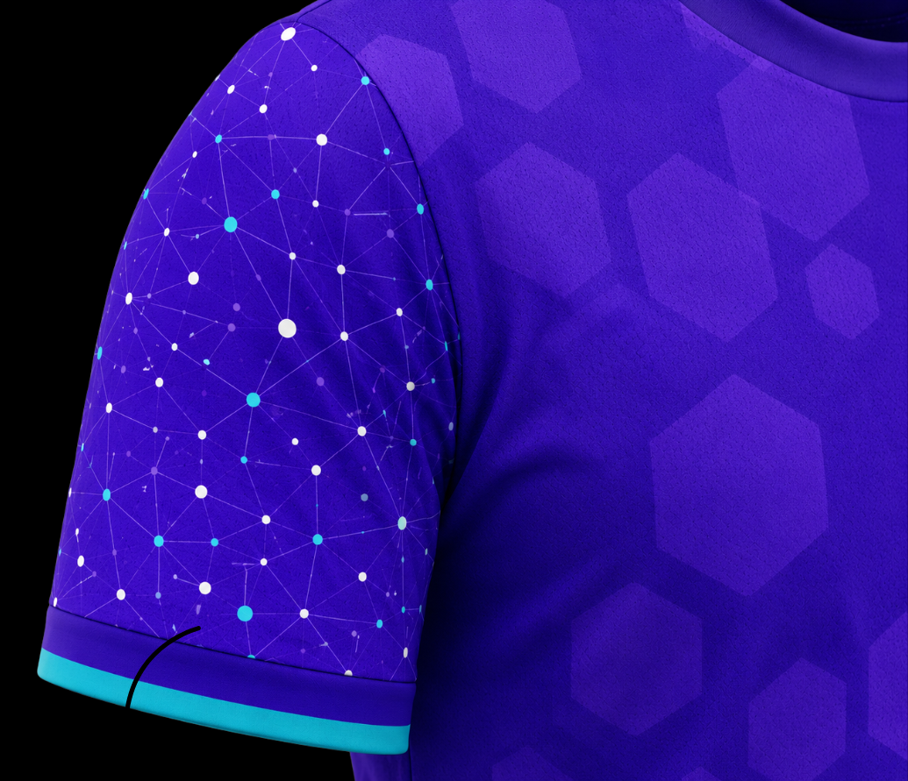
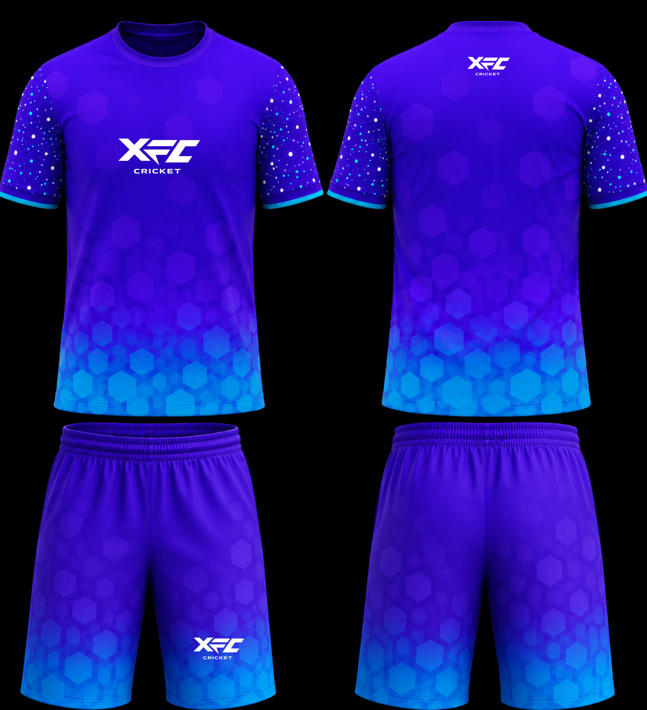
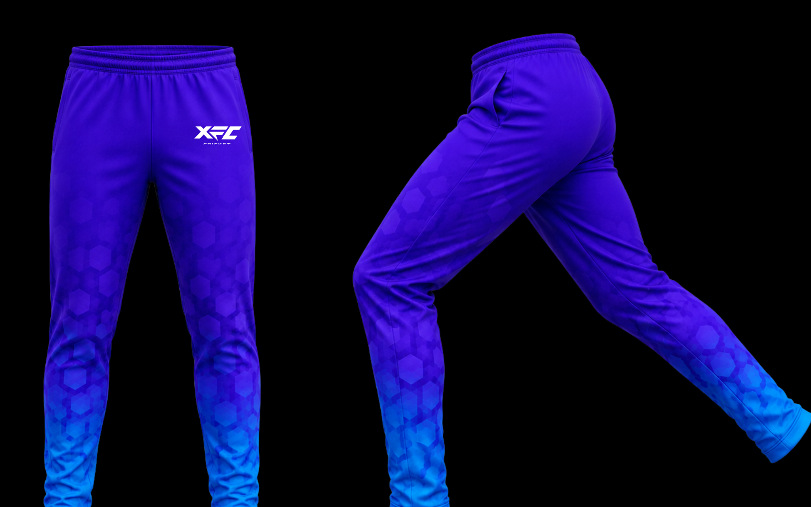

Practice Kit 2026/27

More than a cricket club, a connected community.
This season's practice kit was designed around the idea that XFC is more than a cricket club, it is a connected community.
The colour split was fixed by the competition rules.




The hexagon symbolizes
The jersey combines layered hexagons representing the spirit of the players and the game in a gradient. It has a sleeve of interconnected network graphic to represent the wider XFC community, where each dot has its role.


The sleeves symbolize the interconnected network of players, families, coaches, and supporters that make up XFC Cricket.
Each garment was designed with a different visual weight to create a balanced training kit system. Together, the kit feels modern, cohesive and wearable
The design system combines modern cricket aesthetics with a strong emotional identity. Creating a kit that feels visually memorable both on and off the field.


The final kit delivers a modern, energetic, and professional look that reflects the spirit of XFC Cricket.
The 2026/27 XFC Practice Kit was created directly from this season's theme: Community. The hexagon graphics evolved from the team huddle. The sleeve networks symbolize the wider XFC ecosystem of players, families, coaches, and supporters. The shared visual language connects every garment into one identity system.